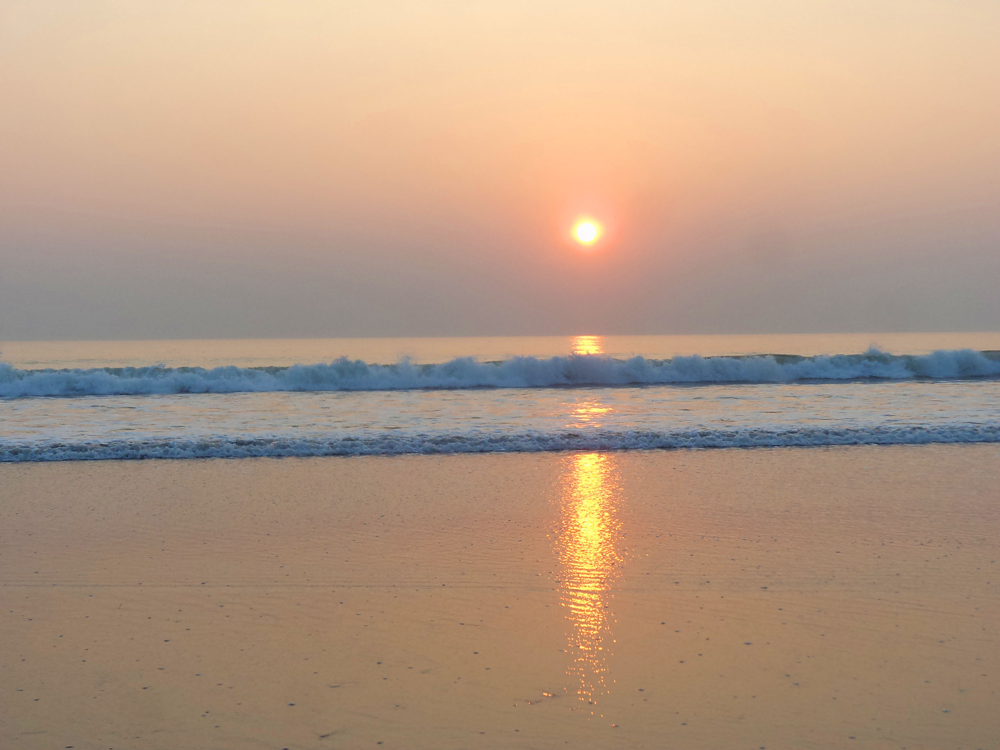

Cox's Bazar
Cox's Bazar is a city, fishing port, tourism centre, and district headquarters in southeastern Bangladesh. It is famous mostly for its long natural sandy beach. It is located 150 km (93 mi) south of the city of Chittagong. Cox's Bazar is also known by the name Panowa, which translates literally as "yellow flower". Another old name was "Palongkee". The modern Cox's Bazar derives its name from Captain Hiram Cox, an officer of the British East India Company, a Superintendent of Palongkee outpost. To commemorate his role in refugee rehabilitation work, a market was established and named after him. Cox's Bazar is located 150 km (93 mi) south of the divisional headquarter city of Chittagong. Cox's Bazar town has an area of 6.85 km2 (2.64 sq mi), and is bounded by Bakkhali River on the north and East, Bay of Bengal in the West, and Jhilwanj Union in the south.[14] The beach in Cox's Bazar has a gentle slope and with an unbroken length of 155 km (96 mi) it is often termed the "longest natural unbroken sea beach" in the world.
Sundarban
Sundarbans is a mangrove area in the delta formed by the confluence of the Ganges, Brahmaputra and Meghna Rivers in the Bay of Bengal. It spans from the Hooghly River in India's state of West Bengal to the Baleswar River in Bangladesh's division of Khulna. It comprises closed and open mangrove forests, land used for agricultural purpose, mudflats and barren land, and is intersected by multiple tidal streams and channels. Four protected areas in the Sundarbans are enlisted as UNESCO World Heritage Sites, viz. Sundarbans National Park, Sundarbans West, Sundarbans South and Sundarbans East Wildlife Sanctuaries. Despite these protections, the Indian Sundarbans were considered endangered in a 2020 assessment under the IUCN Red List of Ecosystems framework. The Sundarbans mangrove forest covers an area of about 10,000 km2 (3,900 sq mi), of which forests in Bangladesh's Khulna Division extend over 6,017 km2 (2,323 sq mi) and in West Bengal, they extend over 4,260 km2 (1,640 sq mi) across the South 24 Parganas and North 24 Parganas districts. The most abundant tree species are sundri (Heritiera fomes) and gewa (Excoecaria agallocha). The forests provide habitat to 453 faunal wildlife, including 290 bird, 120 fish, 42 mammal, 35 reptile and eight amphibian species.
Jaflong
Jaflong is a hill station and tourist destination in the Division of Sylhet, Bangladesh. It is located in Gowainghat Upazila of Sylhet District and situated at the border between Bangladesh and the Indian state of Meghalaya, overshadowed by subtropical mountains and rainforests. It is known for its stone collections and is home of the Khasi tribe. Jaflong is a tourist spot in Sylhet division. It is about 60 km from Sylhet town and takes two hours drive to reach there. Jaflong located amidst tea gardens and hills. It is situated beside the river Sari in the lap of Hill Khashia.

Saint Martin
St. Martin's Island is a small island (area only 3 km2) in the northeastern part of the Bay of Bengal, about 9 km south of the tip of the Cox's Bazar-Teknaf peninsula, and forming the southernmost part of Bangladesh. There is a small adjoining island that is separated at high tide, called Chera Dwip. It is about 8 kilometres (5 miles) west of the northwest coast of Myanmar, at the mouth of the Naf River.Most of the island's approximately 3,700[4] inhabitants live primarily from fishing. The other staple crops are rice and coconut. Being very common on the island, algae are collected, dried, and exported to Myanmar. Between October and April, the fishermen from neighboring areas bring their caught fishes to the island's temporary wholesale market. However, imports of chicken, meat and other foods come in from the mainland Bangladesh and Myanmar. As the centre and the south are mainly farmland and makeshift huts, most of the permanent structures are around the far north. During the rainy season, because of the dangerous conditions on the Bay of Bengal, the inhabitants have no scope to go to the mainland (Teknaf) and their life can become dangerous. There is a hospital on the island, but in the past there has often been no doctor.